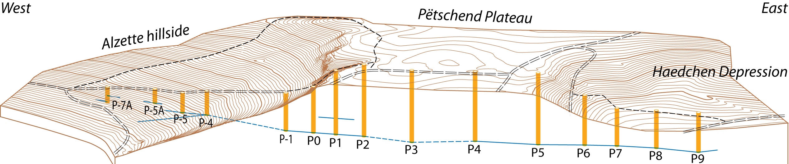

Click anywhere on the model to drop a numbered point, then write a note. Export to share, or import a saved file.

WestEast
Surface: ACT LiDAR 2019 (0.5 m). Shafts placed by georeferenced OSM coords (validated ±2 m by LiDAR); gallery near‑level per the brochure. Solid shafts have a documented depth, faded ones are inferred.
100 m
Drag to rotate · Scroll to zoom · Hover a shaft for depth · Click to focus